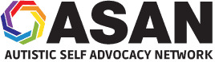
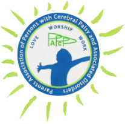
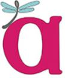
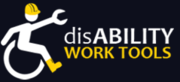
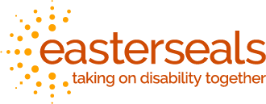
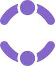
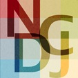
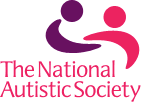

Cerebal Palsy Group

The Cerebral Palsy Group provides resources on Cerebral Palsy (nerve disorders that impede body movement and muscle coordination). It provides legal and family support for anyone affected.

Autistic Self Advocacy Network (ASAN)
ASAN is an organization that promotes direct participation by the autistic, encouraging them to speak out about their stories and join together for awareness projects. They provide resources for learning about autism and life with it.
PAPCP (India)
Parents Association of Persons with Cerebral Palsy and Associated Disorders (PAPCP), based in Bangalore, India, provides a work and activity center for adults with mental and physical disabilities. They welcome volunteers and employees.
Autistic Women & Nonbinary Network (AWN)
AWN is a non-profit that supports autistic women, girls, nonbinary people, and others. They promote awareness and the dispulsion of rumors around autism.
Special Olympics
The Special Olympics is an organization that helps individuals around the globe with physical or mental disabilities that serve as a “barrier” pursue their love of sports and athletics.
Disability Worktools
A website where specific tools for specific physical needs are organized and available.
American Association of People with Disabilities (AAPD)
The American Association of People with Disabilities is a cumulative organization that targets all areas of the disability community, working to increase the political and economic power of this overshadowed community.
Easterseals
Easterseals is an organization whose goals are to help special needs people with high quality services ranging from accessibility resources to camping and recreation. With a team of therapists, teachers, and more, they help special needs people overcome obstacles and reach their games.
Friendship Circle
Friendship Circle, a culturally Jewish organization, provides a summer camp for children and teens with special needs. It offers volunteer and donation opportunities, and has branches in other states.
National Center on Disability and Journalism (NCDJ)
NCDJ is an organization to provide support and guidance for journalists as they cover people with disabilities. Its goal is to cover disability issues without any particular point of view as the coverage on disabilities often has been inaccurate or incomplete.
The National Autistic Society(UK)
This society promotes autism awareness in the UK, with resources and services for the autistic and their families.
Cerebal Palsy Group
The Cerebral Palsy Group provides resources on Cerebral Palsy (nerve disorders that impede body movement and muscle coordination). It provides legal and family support for anyone affected.